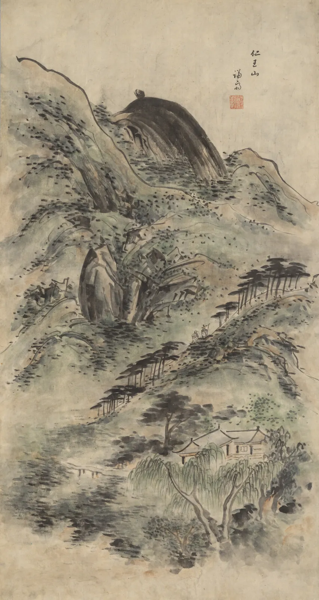

풍경과 대기
언덕 위에 올라 동네를 내려다보면 가까운 지붕은 기와 한 장까지 또렷한데, 그 너머 동네는 회색으로 뭉치고, 맨 끝의 산은 하늘에 거의 녹아 있다. 물감이라면 먼 산에 흰색과 푸른색을 섞으면 된다. 그런데 검은 펜 한 자루밖에 없다면 어떻게 할까. 펜의 잉크는 옅어지지 않는다. 바꿀 수 있는 것은 선의 굵기, 선 사이의 간격, 선을 겹치는 횟수, 그리고 그리지 않고 남겨 두는 종이뿐이다. 이 장은 공기가 먼 것을 어떻게 지우는지 계산하고, 그 지워짐을 선과 여백으로 옮기는 법을 익힌다. 나무와 구름을 덩어리로 단순화하고, 동아시아 산수화가 같은 문제를 어떻게 다르게 풀었는지도 본다.
- 대기 원근에서 대비가 거리에 따라 지수로 줄어든다는 것을 계산으로 확인하고, 가시거리가 풍경의 깊이를 어떻게 바꾸는지 본다.
- 펜 선의 굵기·간격·겹침이 만드는 명도를 계산해, 거리마다 필요한 해칭을 고른다.
- 나무를 잎이 아니라 빛을 받는 덩어리로, 구름을 하늘에 깔린 바닥면 위의 입체로 단순화한다.
- 근경·중경·원경의 명도 범위를 나누고, 실제 작품에서 그 배분과 그것을 깨는 순간을 읽는다.
- 곽희의 삼원(고원·심원·평원)을 눈높이와 시선 방향의 작도로 이해하고, 산수화가 그것을 한 화면에 섞는 방식을 안다.
먼 산은 왜 옅은가
공기는 완전히 투명하지 않다. 공기 분자와 먼지, 작은 물방울이 빛을 조금씩 흩뜨린다. 먼 산에서 오는 빛은 오는 길에 조금씩 흩어져 줄고, 그 사이 공기가 하늘빛을 덧칠한다. 그래서 먼 것일수록 어두운 곳은 밝아지고 밝은 곳은 하늘 쪽으로 가라앉아, 결국 하늘과 구별되지 않게 된다. 이것을 그림에서 쓰는 방법이 대기 원근(Aerial perspective)이다. 원리와 색의 변화는 CompositionBook 6장에서 다뤘다. 이 장은 색이 없는 펜 드로잉으로 그것을 옮기는 데 집중한다. 펜에는 색이 없으니 남는 것은 명도와 대비뿐이다.
기상학자 하랄 코슈미더(Harald Koschmieder)가 1924년에 정리한 관계에 따르면, 하늘을 배경으로 본 물체의 겉보기 대비는 거리에 따라 지수로 줄어든다. 사람이 하늘과 구별할 수 있는 대비의 문턱을 2%로 잡으면, 대비가 그만큼 줄어드는 거리가 가시거리(Visibility)다.
아래 위쪽 그림은 다섯 겹의 산을 0.05 km에서 8 km까지 놓고, 가까이에서는 모두 같은 짙은 숲의 명도라고 둔 것이다. 아래쪽 그래프에서 점선을 끌어 거리를 고르고, 가시거리를 바꿔 본다.
거리와 대비: 가시거리가 깊이를 정한다
계산이 알려 주는 것은 두 가지다. 첫째, 대기 원근은 수 km 단위의 일이다. 몇백 m 떨어진 동네는 공기만으로는 근경과 크게 다르지 않다. 그런데도 화가들은 중경을 근경보다 확실히 옅게 그린다. 실제보다 공기를 두껍게 그리는 과장이다. 그 과장 덕분에 화면 안에서 켜가 갈린다. 둘째, 같은 장소도 날씨에 따라 깊이가 다르다. 비 갠 뒤 먼 산이 "코앞에 다가온 듯" 보이는 것은 산의 대비가 거의 줄지 않아서, 눈이 거리를 대비로 짐작하는 버릇이 속는 것이다.
펜 한 자루로 공기를 그리기
펜의 선은 어디에 그어도 같은 검정이다. 그런데 종이에서 조금 떨어져 보면 촘촘한 해칭은 어둡고 성긴 해칭은 밝아 보인다. 눈이 선과 종이를 섞어 하나의 회색으로 보기 때문이다. 선이 종이의 몇 퍼센트를 덮는지(피복률(Coverage))를 알면 그 회색을 계산할 수 있다. 인쇄의 망점 농도를 계산하는 머리–데이비스 식(Murray–Davies, 1936)과 같은 생각이다. 해칭을 다른 방향으로 한 겹 더 겹치면, 첫 겹이 남긴 빈 종이의 같은 비율을 다시 덮는다.
아래에서 켜를 고르면 앞의 대기 모형이 정한 목표 명도가 띠로 나온다. 펜 굵기와 간격, 겹침을 바꿔 목표에 맞춘다. 왼쪽은 크게 확대한 해칭, 오른쪽 작은 칸은 화면에서 대략 실제 크기다.
목표 명도에 맞는 해칭 고르기
같은 명도를 만드는 해칭은 여러 가지다. 굵은 펜으로 성기게, 가는 펜으로 촘촘하게, 한 겹 또는 여러 겹. 그 가운데 무엇을 고를지는 명도만으로 정해지지 않는다. 굵고 성긴 선은 선 하나하나가 읽혀 가까워 보이고, 가늘고 고른 선은 면으로 녹아 멀어 보인다. 그래서 펜 풍경에서는 명도는 간격과 겹침으로, 거리는 선 굵기로 나눠 맡기는 것이 흔한 방법이다.
선의 굵기와 세부도 멀어진다
공기는 명도만 지우지 않는다. 멀리 있는 것은 망막에 작게 맺혀 세부가 사라지고, 윤곽은 하늘과의 대비가 약해져 군데군데 끊겨 보인다. 그래서 펜 풍경에서 거리는 세 가지로 동시에 표현된다. 선의 굵기(가까울수록 굵게), 세부의 양(가까울수록 기와·잎·창 하나하나까지), 윤곽의 연속성(가까울수록 이어서, 멀수록 끊어서). 아래 두 그림은 같은 언덕 위 동네다. 경계선을 끌어 비교한다.
왼쪽은 모든 켜를 같은 0.5 mm 선과 같은 간격의 해칭으로 그렸다. 지붕, 먼 집, 산이 모두 같은 힘으로 앞에 나와 한 장의 벽지처럼 보인다. 오른쪽은 근경에 0.5 mm 선과 굵은 세부를, 중경에 0.3 mm 선과 단순한 덩어리를, 원경에 0.3 mm의 끊긴 윤곽과 성긴 해칭 한 겹만 남겼다. 그린 것은 더 적은데 공간은 더 깊다. 흑백 단추를 켜도 차이가 그대로인 것은 이 차이가 처음부터 명도와 선의 차이이기 때문이다.
나무: 잎이 아니라 덩어리
나무 한 그루에는 잎이 수만 장 있다. 잎을 하나하나 그리면 나무는 고른 무늬가 되어 오히려 입체가 사라진다. 화가들은 나무를 잎 덩어리(Foliage mass) 몇 개로 본다. 덩어리 하나하나를 7장의 구처럼 생각하면, 빛을 받는 쪽과 등진 쪽, 아래쪽의 짙은 그늘이 생긴다(8장의 명암 단계). 잎은 덩어리의 가장자리와 명암 경계에서만 몇 장 보여 주면 된다. 아래에서 빛을 끌어 옮기고 덩어리 수를 바꿔 본다.
나무를 덩어리로 세우기
덩어리가 적당할 때 나무는 하나의 큰 형태(실루엣)와 그 안의 큰 명암 몇 덩이로 읽힌다. 화가마다 덩어리를 셋에서 일곱 정도로 보라고 권하는 경우가 많지만 정해진 수는 없다. 기준은 멀리서 눈을 가늘게 떴을 때 큰 명암이 보이느냐다. 먼 나무일수록 덩어리 수를 줄여, 원경의 숲은 덩어리 하나에 성긴 해칭 한 겹이면 된다. 동아시아 산수화의 나무 그리는 법(수지법)도 잎을 점과 짧은 획의 묶음, 곧 점엽(點葉)으로 덩어리지게 그려 온 전통이 있다.
구름: 하늘에 깔린 바닥
구름도 그냥 떠 있는 솜뭉치가 아니다. 맑은 날의 뭉게구름은 공기가 올라가며 식어 수증기가 맺히는 높이에서 생기므로, 바닥이 거의 같은 높이에 평평하게 놓인다. 그 높이는 날씨에 따라 다르지만 흔히 수백 m에서 2 km 안팎이다. 그러면 구름의 바닥들은 머리 위에 펼쳐진 하나의 평면, 곧 거꾸로 놓인 땅이다. 땅 위의 타일이 멀수록 작아지고 수평선으로 모이듯(4장), 구름도 멀수록 작아지고, 납작해지고, 수평선 가까이로 내려온다. 아래에서 수평선을 위아래로 끌고 구름 바닥의 높이를 바꿔 본다.
구름 바닥면의 투시
구름의 밝은 쪽과 어두운 쪽도 덩어리 나무와 같다. 해를 향한 윗면과 옆면은 밝고, 평평한 바닥은 그늘이 진다. 펜으로는 구름의 밝은 부분을 비워 두고, 바닥과 그늘 쪽만 가는 해칭으로 누른다. 구름 윤곽에 굵은 선을 두르면 구름이 무거운 바위가 되기 쉽다. 하늘 전체에 아주 성긴 수평 해칭을 깔고 구름을 비워 남기는 방법도 있다. 그러면 구름은 그리지 않고도 생긴다.
근경·중경·원경: 렘브란트의 세 나무
풍경을 근경(Foreground), 중경(Middle ground), 원경(Background)의 세 켜로 나누는 것은 동서양 풍경화에 오래된 방법이다. 세 켜는 실제 거리의 구분이라기보다 화면의 명도와 선을 배분하는 틀이다. 펜이나 동판화처럼 선만으로 그리는 매체에서 그 배분이 가장 잘 보인다.

이 그림은 세 켜의 교과서이면서 규칙을 어기는 교과서이기도 하다. 근경 → 중경 → 원경으로 선이 가늘어지고 성겨지는 질서는 지키되, 하늘에서는 그 질서를 뒤집었다. 그 결과 가장 먼 지평선 부근이 화면에서 가장 밝은 띠가 되어, 비 사이로 비친 빛이 들판 끝에 떨어진 것처럼 보인다. 대기 원근은 "먼 것을 옅게"가 아니라 "먼 것을 하늘에 가깝게"이므로, 하늘이 어두우면 먼 것도 어두울 수 있다. 렘브란트는 그 사이에 밝은 띠 하나를 남겨 두 켜를 갈랐다.
삼원을 작도로 보기
북송의 화가 곽희의 화론을 아들 곽사가 엮은 『임천고치』(林泉高致)는 산을 보는 세 가지 거리, 삼원(三遠, Three distances)을 말한다. 산 아래에서 꼭대기를 올려다보는 고원(高遠), 산 앞에서 산 뒤를 들여다보는 심원(深遠), 가까운 산에서 먼 산을 건너다보는 평원(平遠)이다. CompositionBook 6장은 삼원을 화면의 배치로 보았다. 여기서는 삼원을 보는 사람의 눈높이와 시선 방향으로 다시 읽어 본다. 같은 산들도 눈을 어디에 두느냐에 따라 세 가지로 보인다. 『임천고치』는 세 가지 원의 색도 구별해, 고원은 맑고 밝으며, 심원은 무겁고 어둡고, 평원은 밝은 곳과 어두운 곳이 함께 있다고 적었다(요약). 시점이 바뀌면 명도의 배분도 바뀐다는 관찰이다.
아래 위쪽 단면도에서 눈을 끌어 높이와 자리를 옮긴다. 시선은 가운데 산의 꼭대기를 향한다. 아래쪽 그림은 그 자리에서 본 모습을 핀홀 투시로 계산한 것이다.
눈높이로 보는 삼원
작도로 보면 삼원은 세 개의 서로 다른 사진이다. 그런데 산수화는 대개 한 장의 사진을 그리지 않았다. 한 화면 안에서 아래쪽은 올려다보고, 가운데 골짜기는 들여다보고, 위쪽 먼 산은 건너다본다. 핀홀 투시라면 앞산에 가려 보이지 않았을 뒷산이 앞산 위로 높이 솟고, 그 사이는 안개와 여백이 끊어 준다. 보는 사람은 화면을 따라 눈을 옮기며 산을 오르내린다. 시뮬레이터 ④에서 본 것처럼 하나의 눈은 많은 것을 가린다. 산수화의 여러 시점은 투시를 모르는 것이 아니라, 하나의 눈이 가리는 것을 다 보여 주기 위한 다른 선택이다.

정선의 그림은 이 장의 계산을 두 번 깬다. 한 시점의 투시 대신 아래에서 올려다보는 흐름을 따라 산을 쌓았고, 대기 원근 대신 가장 먼 봉우리를 가장 짙게 했다. 그래도 그림은 깊다. 비탈의 먹점이 위로 갈수록 작아지고, 바위와 비탈 사이를 비워 켜를 끊었기 때문이다. 규칙은 공간을 만드는 여러 단서 가운데 하나이고, 다른 단서들이 받쳐 주면 하나쯤은 뒤집을 수 있다. 무엇을 뒤집을지는 그림이 무엇을 말하려는지가 정한다.
언덕 위에서 본 동네
마지막으로 펜 풍경 한 장을 세운다. 언덕 위에서 내려다본 가까운 지붕들(약 50 m), 그 너머 동네(약 500 m), 먼 산(약 6 km)이다. 공기의 두께와 중경의 과장을 정하면, 시뮬레이터가 대기 모형으로 켜마다 목표 명도를 구하고, 주어진 펜으로 그 명도를 내는 해칭(간격 1.0 mm 이상)을 골라 실제로 긋는다. 화면 위를 끌면 확대경이 해칭을 크게 보여 준다.
펜 풍경 무대: 세 켜의 선과 해칭
과장을 1로 내렸을 때 중경이 근경에 붙어 버린 것이 이 장의 핵심이다. 실제 공기대로 그리면 수백 m 안의 켜는 갈리지 않는다. 화가가 중경을 "실제보다 먼 공기"로 그리는 것은 사실을 왜곡하려는 것이 아니라, 눈이 실제 풍경에서 다른 단서(두 눈의 시차, 고개를 움직일 때의 운동 시차, 초점)로 얻던 깊이를 종이 위에서는 명도로 대신 주어야 하기 때문이다.
서윤의 작업 노트
펜 한 자루로 먼 산을 옅게
「골목 산책」의 마지막 쪽은 동네 풍경이다. 서윤은 서점 뒤 언덕 꼭대기 쉼터에 올라 내려다본 장면을 골랐다. 발아래 50 m쯤에 기와와 슬레이트 지붕들이 겹쳐 있고, 500 m쯤 너머로 동네 지붕들이 이어지며, 맨 끝에 6 km쯤 떨어진 산 능선이 있다. 첫 스케치는 모두 0.5 mm 펜으로 같은 간격의 해칭을 넣었다. 흑백 복사를 해 보니 지붕과 동네와 산이 한 장의 무늬가 되어, 어디가 가깝고 어디가 먼지 알 수 없었다. 한도경은 "산을 다 그리지 마. 산은 하늘에 거의 녹아 있잖아" 하고 말했다.
서윤은 계산부터 했다. 그날은 봄 연무가 있어 가시거리를 약 15 km로 잡았다. 이 책의 모델로 계산하면 β = 3.912 ÷ 15 ≈ 0.26/km이고, 남은 대비는 50 m에서 0.99, 500 m에서 0.88, 6 km에서 0.21이다. 가까이에서 본 지붕과 숲의 중간 톤을 L* 약 57로 두면, 겉보기 명도는 근경 약 58, 중경 약 64, 원경 약 88이 된다. 원경은 하늘(종이, 94)에 바짝 붙었지만, 중경은 근경과 6밖에 차이가 나지 않았다. 실제 공기대로 그리면 동네가 발밑 지붕에 붙는다는 뜻이었다. 서윤은 중경을 세 배 두꺼운 공기, 곧 1.5 km의 공기로 과장하기로 했다. 그러면 중경의 목표는 L* 약 72다.
그다음 해칭을 골랐다. 종이 반사율 0.85, 잉크 0.04로 머리–데이비스 식에 넣었다. 근경은 0.5 mm 펜, 간격 1.0 mm로 두 방향을 겹쳐 피복률 75%, L* 약 56이 된다. 가장 짙은 처마 밑과 창 그늘은 칠해 메운다(L* 약 24). 중경은 0.3 mm 펜, 간격 1.0 mm 두 겹으로 피복률 51%, L* 약 72. 원경은 0.3 mm 펜, 간격 1.9 mm 한 겹으로 피복률 16%, L* 약 88이고, 능선은 이어 긋지 않고 끊어 그린다. 하늘은 비운다. 하늘과의 휘도 대비로 보면 근경 해칭 0.71, 중경 0.49, 원경 0.15다. 원경의 0.15는 실제 공기가 6 km에서 남기는 대비(0.21 × 근경 대비)와 거의 같고, 중경만 실제보다 옅게 과장된 셈이다. 두 번째 스케치를 흑백으로 복사하자 세 켜가 순서대로 물러났다.
서윤의 선택은 이 세 켜였다. 도경은 하나를 덧붙였다. "산 능선 가운데 한 곳만, 해가 걸린 봉우리 쪽만 선을 조금 더 이어 봐. 다 옅으면 어디를 봐야 할지 몰라." 서윤은 원경의 능선 하나를 조금 더 길게 이었다. 계산은 출발점이었고, 어디를 강조할지는 그림이 정했다.
핵심 정리
- 대기 원근은 먼 것을 흐리게 하는 것이 아니라 하늘에 가깝게 한다. 겉보기 대비는 \(C_0e^{-\beta d}\)로 줄고, 가시거리 \(V = 3.912/\beta\)가 풍경의 깊이를 정한다.
- 대기 원근은 수 km 단위의 일이라, 수백 m 안의 중경은 실제 공기로는 근경과 거의 같다. 화가는 중경을 실제보다 두꺼운 공기로 과장해 켜를 가른다.
- 펜의 명도는 피복률이 정한다. \(c = 1-(1-w/s)^n\), \(R = R_p - c(R_p-R_i)\). 같은 명도라도 굵고 성긴 선은 가깝게, 가늘고 고른 선은 멀게 보이므로 명도는 간격과 겹침으로, 거리는 선 굵기로 나눠 맡긴다.
- 나무는 잎이 아니라 빛을 받는 덩어리 몇 개로, 구름은 바닥이 평평한 입체가 머리 위의 한 평면에 놓인 것으로 단순화한다. 그 평면도 투시를 따른다.
- 근경·중경·원경은 화면의 명도와 선을 배분하는 틀이다. 렘브란트처럼 어두운 하늘로, 정선처럼 가장 짙은 먼 봉우리로 규칙을 뒤집어도 다른 단서가 받치면 공간은 선다.
- 곽희의 삼원(고원·심원·평원)은 눈높이와 시선 방향으로 읽을 수 있다. 산수화는 한 시점의 투시가 가리는 것을 보여 주려고 여러 시점을 한 화면에 섞는다.
확인 퀴즈
1. 가시거리가 15 km인 날, 500 m 떨어진 동네와 6 km 떨어진 산의 겉보기 대비(가까이에서 본 대비에 대한 비율)로 가장 가까운 것은?
2. 0.3 mm 펜으로 간격 1.0 mm의 해칭을 두 방향으로 겹쳤다. 피복률은?
3. 나무를 그릴 때 잎을 하나하나 고르게 그렸더니 빛의 방향이 읽히지 않았다. 가장 알맞은 고침은?
4. 곽희의 삼원을 눈높이와 시선으로 읽을 때 옳은 짝은?